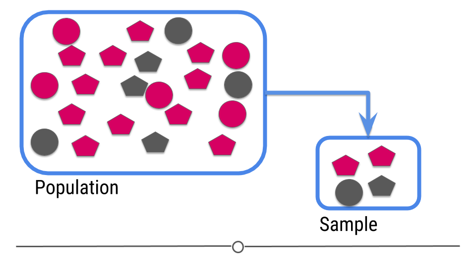

11-tidymodels
2024-11-12
tidymodels: ecosystem
The main packages (and their roles):

Inference: intro
In intro stats, you should have learned the central dogma of statistics: we sample from a population

The data from the sample are used to make an inference about the population:

ML: intro
For prediction, we have a similar sampling problem:

But now we are trying to build a rule that can be used to predict a single observation’s value of some characteristic using characteristics of the other observations.

tidymodels for ML
How these packages fit together for carrying out machine learning:

tidymodels: steps

Fight Songs

fight <- read_csv('data/fight-songs.csv', show_col_types = FALSE)
# Calculate avg_duration and avg_bpm across fight songs for classifying
avg_duration <- mean(fight$sec_duration, na.rm = TRUE)
avg_bpm <- mean(fight$bpm, na.rm = TRUE)
# Begin ggplot
ggplot(fight, aes(x = sec_duration, y = bpm)) +
# Making sure Notre Dame is colored and referenced differently
geom_point(aes(color = ifelse(school == "Notre Dame", "Notre Dame", factor(school))), size = 5, alpha = 0.5) +
scale_color_hue() +
geom_vline(xintercept = avg_duration, linetype = "dotted", color = "black", size = 0.7) +
geom_hline(yintercept = avg_bpm, linetype = "dotted", color = "black", size = 0.7) +
annotate("text", x = avg_duration + 5, y = 100, label = "AVERAGE", angle = 90, vjust = -0.5, size = 3.5) +
# Adding in my labels for quadrants + AVERAGE
annotate("text", x = 0, y = avg_bpm + 5, label = "AVERAGE", hjust = -0.5, size = 3.5) +
annotate("text", x = 30, y = 190, label = "Fast and short", size = 4) +
annotate("text", x = 130, y = 190, label = "Fast but long", size = 4) +
annotate("text", x = 30, y = 60, label = "Slow but short", size = 4) +
annotate("text", x = 130, y = 60, label = "Slow and long", size = 4) +
geom_point(aes(x = 60, y = 150), color = "black", size = 5) +
annotate("text", x = 60, y = 150, label = "Notre Dame", vjust = -1.5, fontface = "bold") +
labs(x = "Duration", y = "Beats per minute") +
# Scale my axis to adjust to match original
scale_x_continuous(breaks = seq(0, 180, by = 20)) +
scale_y_continuous(breaks = seq(40, 200, by = 20), limits = c(40, 200)) +
coord_fixed(ratio = 0.8) +
theme_minimal() +
# Theme adjusting
theme(
plot.margin = margin(t = 10, r = 10, b = 10, l = 20),
legend.position = "none",
panel.grid.minor = element_line(color = "grey90", linetype = "solid"),
panel.grid.major = element_line(color = "grey80", linetype = "solid"),
panel.border = element_rect(color = "black", fill = NA))fight_songs_data <- fight
mean_bpm <- mean(fight_songs_data$bpm, na.rm = TRUE)
mean_duration <- mean(fight_songs_data$sec_duration, na.rm = TRUE)
ggplot(fight_songs_data, aes(x = sec_duration, y = bpm)) +
geom_point(aes(color = school), alpha = 0.2, size = 5) +
geom_vline(xintercept = mean_duration, linetype = "dotted", color = "black") +
geom_hline(yintercept = mean_bpm, linetype = "dotted", color = "black") +
geom_point(data = filter(fight_songs_data, school == "Stanford"),
aes(x = sec_duration, y = bpm),
color = "red", size = 5, shape = 21, fill = "red") +
geom_text(data = filter(fight_songs_data, school == "Stanford"),
aes(x = sec_duration, y = bpm, label = "Stanford", fontface = "bold", family = "Arial"),
vjust = -1, color = "black", size = 4) +
labs(
title = "How Stanford's Fight Song stacks up",
x = "Duration",
y = "Beats per minute"
) +
scale_y_continuous(breaks = seq(60, 200, by = 20),
labels = c("60", "80", "100", "120", "140", "160", "180", "200bpm"),
limits = c(60, 200)) +
scale_x_continuous(breaks = seq(0, 180, by = 20),
labels = c("0 sec", "20", "40", "60", "80", "100", "120", "140", "160", "180")) +
annotate("text", x = 10, y = 190, label = "Fast and short", size = 4, hjust = 0, family = "Courier") +
annotate("text", x = 10, y = 70, label = "Slow but short", size = 4, hjust = 0, family = "Courier") +
annotate("text", x = 140, y = 190, label = "Fast but long", size = 4, hjust = 1, family = "Courier") +
annotate("text", x = 140, y = 70, label = "Slow and long", size = 4, hjust = 1, family = "Courier") +
annotate("text", x = max(fight_songs_data$sec_duration) - 20, y = mean_bpm,
label = "AVERAGE", vjust = 0.5, hjust = -0.1, color = "black", size = 3, family = "Arial") +
theme_minimal() +
theme(
legend.position = "none",
plot.title = element_text(hjust = 0.5, face = "bold", family = "Arial"),
panel.grid.major = element_line(size = 0.5),
panel.grid.minor = element_blank()
)Hate Crimes (Adam)


# Load data
url <- "https://raw.githubusercontent.com/fivethirtyeight/data/master/hate-crimes/hate_crimes.csv"
hate_crimes <- read_csv(url)
states_map <- map_data("state")
hate_crimes <- hate_crimes |>
mutate(state = tolower(state))
map_data <- states_map |>
left_join(hate_crimes, by = c("region" = "state"))
#Graph Numero Uno
ggplot(map_data, aes(x = long, y = lat, group = group, fill = avg_hatecrimes_per_100k_fbi)) +
geom_polygon(color = "white") +
scale_fill_gradient(low = "#ffe4d0", high = "#ba3900", na.value = "gray", name = "Hate Crimes\nper 100k") +
labs(title = "PRE-ELECTION HATE CRIME RATES POST-ELECTION",
subtitle = "Average annual hate crimes per 100,000 residents, 2010-15") +
theme_minimal() +
theme( axis.text.x = element_blank(),
plot.title = element_text(face = 'bold'),
axis.ticks.x = element_blank(),
axis.text.y = element_blank(),
axis.ticks.y = element_blank(),
axis.title.x = element_blank(),
axis.title.y = element_blank(),
panel.grid = element_blank(),
legend.position = "top",
legend.title = element_text(size=6),
) +
coord_fixed(1.3) #Unstretch#Second Graph
ggplot(map_data, aes(x = long, y = lat, group = group, fill = hate_crimes_per_100k_splc)) +
geom_polygon(color = "white") +
scale_fill_gradient(low = "#b0e2c8", high = "#006646", na.value = "gray", name = "Hate Crimes\nper 100k") +
labs(title = "POST-ELECTION HATE CRIME RATES POST-ELECTION",
subtitle = "Average annual hate crimes per 100,000 residents, 2010-15") +
theme_minimal() +
theme( axis.text.x = element_blank(),
plot.title = element_text(face = 'bold'),
axis.ticks.x = element_blank(),
axis.text.y = element_blank(),
axis.ticks.y = element_blank(),
axis.title.x = element_blank(),
axis.title.y = element_blank(),
panel.grid = element_blank(),
legend.position = "top",
legend.title = element_text(size=6),
) +
coord_fixed(1.3) #UnstretchCongress Age

congress_data = read_csv("data/data_aging_congress.csv")
congress_data <- congress_data |>
mutate(year = as.numeric(format(start_date, "%Y"))) #Extracted year from start_date
#Grouping Congress by session to calculate median age
congress_median_age <- congress_data |>
group_by(congress, year, chamber) |>
summarise(median_age = median(age_years, na.rm = TRUE)) |>
ungroup()
ggplot(congress_median_age, aes(x = year, y = median_age, color = chamber)) +
geom_step(linewidth = 1) +
#Senate
geom_text(data = congress_median_age |>
filter(chamber == "Senate", year == 2023),
aes(label = "65.3"),
hjust = -0.2, vjust = +0.3, size = 3, color = "black", show.legend = FALSE) +
#House
geom_text(data = congress_median_age |>
filter(chamber == "House", year == 2023),
aes(label = "57.8"),
hjust = -0.2, vjust = -0.5, size = 3, color = "black", show.legend = FALSE) +
#Titles
labs(title = "Median Age of the U.S. Senate and House by Congress, 1919 to 2023",
subtitle = "The House and Senate are older than ever before",
x = "Year",
y = "Median Age",
color = "Chamber") +
scale_color_manual(values = c("Senate" = "#5b41d1", "House" = "#55aa5c"))+
#Scaling both axis
scale_x_continuous(limits = c(min(congress_median_age$year), max(congress_median_age$year)), breaks = seq(1920, 2020, by = 10)) +
scale_y_continuous(limits = c(45, NA)) +
theme_minimal() +
theme(plot.title = element_text(face = "bold", size = 14),
plot.subtitle = element_text(size = 10),
axis.title = element_text(size = 12),
legend.position = "top",
aspect.ratio = 1/4,
panel.grid.major.x = element_blank(),
panel.grid.minor.x = element_blank(),
panel.grid.minor.y = element_blank())CS01 Data (Sandy)


WB <- read_csv("https://github.com/ShanEllis/datasets/raw/refs/heads/master/Blood.csv")
WB <- WB |>
mutate(Treatment = fct_recode(Treatment,
"5.9% THC (low dose)" = "5.90%",
"13.4% THC (high dose)" = "13.40%"),
Treatment = fct_relevel(Treatment, "Placebo", "5.9% THC (low dose)"),
Group = fct_recode(Group,
"Frequent User" = "Frequent user",
"Occasional User" = "Occasional user")) |>
janitor::clean_names() |>
rename(thcoh = x11_oh_thc,
thccooh = thc_cooh,
thccooh_gluc = thc_cooh_gluc,
thcv = thc_v) |>
mutate(timepoint = case_when(time_from_start < 0 ~ "pre-smoking",
time_from_start > 0 & time_from_start <= 30 ~ "0-30 min",
time_from_start > 30 & time_from_start <= 70 ~ "31-70 min",
time_from_start > 70 & time_from_start <= 100 ~ "71-100 min",
time_from_start > 100 & time_from_start <= 180 ~ "101-180 min",
time_from_start > 180 & time_from_start <= 210 ~ "181-210 min",
time_from_start > 210 & time_from_start <= 240 ~ "211-240 min",
time_from_start > 240 & time_from_start <= 270 ~ "241-270 min",
time_from_start > 270 & time_from_start <= 300 ~ "271-300 min",
time_from_start > 300 ~ "301+ min"))
WB |>
ggplot(mapping = aes(x = time_from_start,
y = thccooh,
color = group)) +
geom_point(size = 3) +
labs(x = "Time After Smoking (Minutes)", y = "THCCOOH",
title = "Change in THCCOOH Levels After Smoking",
subtitle = "Levels measured over time for frequent and occasional users",
color = "Group") +
theme(plot.title = element_text(size = 20, hjust = 0, vjust = 2),
plot.subtitle = element_text(size = 16, hjust = 0, vjust = 1)) +
scale_color_manual(values = c("Frequent User" = "#fc8d59",
"Occasional User" = "#91bfdb")) +
theme_minimal()